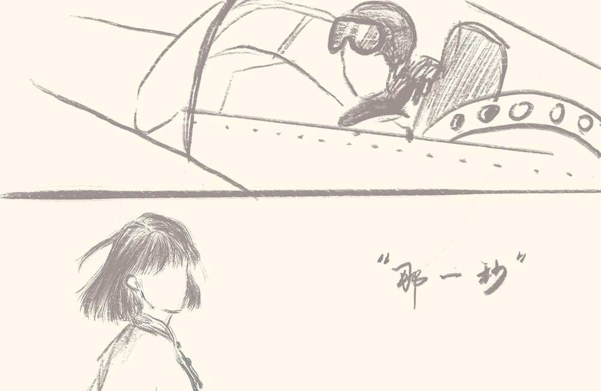

第七版
第七版

“因为他们，我尚且有家可回。可他们，为了我们，再也回不了家了。”
——题记
刚出营房大门，冷，真冷——不由的打了个颤，我蜷着身子，拢了拢衣领，揉了揉冻得发酸的鼻子，使劲的跺了跺脚。手上也没闲着，不停地搓着手心，哈着热气，试图将那两块冰焐热。可那热气刚一呼出去就散成了一股股白烟，上升，盘旋，转眼间又被寒风吹得破碎，直到消失殆尽。
“......这才十月中旬，这什么鬼地方......怎么就这么冷！”门口的几个哨兵也不知究竟是哪里人，操着一口方言咒骂这天气。
我隐约听懂了其中几句，也不知是回答他们的问题，还是提醒自己，“北纬四十度，东经一百二十七度，朝鲜。”
我怎么也没有想到，第一次出远门，会来这样的地方。朝鲜，这个熟悉又陌生的国家。北端与新中国接壤，西部与山东隔黄海相望。不太一样的是，这里是白色的世界，眼前的山冷的好像在颤抖，河流也变得僵硬，风停的时候，连空气都似乎要凝固起来。
上个星期下了大雪，积雪封了山口，部队已经断粮好几天了。
一碗清的不能再清的“米汤”，上面孤零零地漂着几根菜叶，一个好似受不了这里的寒冬已经冷的裂开的窝头。
如果说这诡异的寒冬已浇灭了一半我的热血激情，那连续数天的饥饿便将这激情浇得一丝不剩。
“向锌同志！向锌同志！陈团长和张政委喊你过去！”一阵急促的叫声响起。我急急地应了一声，便转身向团长的营房跑去。
来到这里已有小半个月，这还是我第一次正式面见团长及政委。站在门口的我并没有急急地冲进去，而是仔细地整理着自己的衣服。
“老陈啊，出来了这么久，等小向过来，也让他给你老婆孩子写封家书吧！”这是房里传来的声音。
“不写不写，写了净让她们娘俩成天替我担惊受怕。再说，见着信哪有见着真人回来心里舒坦啊，等仗打完了，打完了我就把自己带回家。”
“哈哈哈哈，那倒也是！”
我吸了口气，大步走进去，学着战士们的样子笨拙地向陈团长和张政委敬了个礼。
“小向啊，快来坐快来坐！我们可盼着你来好久了。怎么样，还能适应吗？这地方苦，不比北京。这可真是我们招待不周啊！”
我看着眼前这两人，年龄大概都在四十岁左右，身上穿着的衣服单薄又破旧，一层又一层的补丁明晃晃的趴在他们身上，有些刺眼。再看四周，一个木桌,两三个板凳,还有两个刚能容纳下人的行军床。屋子四处漏风，费力钻进来的寒风吹得人不仅身上疼，心里也跟用针扎了似的。团长和政委的营房，并不比普通士兵的好了多少。
我的鼻头冻得更酸了，“不是的团长政委，很好，我可以适应的！”
“那就好那就好，小向同志啊，上级布置的任务可以完成吗？”
我的脸颊有些发烫，不知是羞愧还是怎的，大声回道；“保证完成任务！”
我迅速回房收拾了一下，带着一厚沓纸和几只水笔，便向战士们的营房进发。
一阵尖锐短促的集合号声在冰天雪地里响起，很快，战士们军容整齐地列成了两队，不似以往打仗前的冰冷肃穆，反而多了几分喜悦与柔和。
“大家列好队，请向锌同志替咱们写信！”
是的，这就是我此行的任务，替前线战士们写家书并将它们带回国，送到他们亲人的手中。
第一封信。
“向同志，俺叫杨胜。俺要给俺娘写信。”我应了声好，便开始动笔。
“娘亲，见信如晤”我在纸上端端正正的写下。
“诶向同志，俺还没说呢，你咋这就开始写了？”
“同志，我刚刚写的是书信的开头，这是书信的基本格式。”
“俺没写过信，向同志。你可别笑话俺。”杨胜不好意思的挠了挠后脖子。
“当然不会，你来说，我写。”
“娘，你腿还疼不疼？疼可千万别忍着，快让村东头的陈大爷给你瞧瞧.....”
没写几句，看着开篇的“见信如晤”，我刚想出声打断，罢了，罢了，倒是我有些唐突。
“......你也别操心，儿子现在是志愿军，在这边过得好着呢，等俺们把美国人打跑了，就会回来......二妹和妹夫还吵架吗，让他们好好过日子,比什么都强......对，还有三弟，有没有看上哪家的姑娘，那小子也不小了，是时候成家了......娘，弟弟妹妹，你们好好地在家里等俺，等俺回来.....”
第二封，是写给爹娘的。
第三封，还是写给爹娘的。
第四封，第五封......
我已经记不清我写了多少封信了，手指早已泛酸。前几天刚长的冻疮此刻又凑热闹般的裂开了嘴，可此时的我压根没有功夫顾及那点痛楚，只想着多写一些，多写一些。
“同志，你要给谁写呀？” 没人应声。
我愣了愣，抬起了头，映入眼帘的是一个瘦瘦小小的战士，明显不合身的军装松松垮垮地挂在他的身上，活像一个偷穿了大人衣服的小孩。
“向同志，能陪我聊会天吗？”他笑嘻嘻的看着我，反问道。
我心里暗暗地想：不写信来添什么乱呀？但看着他那灿烂的笑容，嘴里的“不行”愣是没吐出来
小同志十分热络地向我介绍自己：“向锌同志，我叫小伍！”
出于礼貌，我也正式地介绍了自己。
“向同志，我们都认识你。在我们连，你可是响当当的人物！”
“谁不知道，向同志你是从北京来的学生，是文化人。”
第一次听到这样的话，我倒是有些脸红，连忙说道：“不敢当不敢当，我只是念了几年公立学校，认识几个字罢了。”
小伍显然不相信我说的话，他指着桌子上我刚写好的那一沓信说：“向同志，这可不止几个字啊，反正在我眼里你就是厉害。不像我，一个大字都不认识。”刚刚还趾高气昂的小伍耷拉下了脑袋。
“哦对了，向同志，你是从首都来的，你能给我讲讲首都吗？”
我自幼生活着的地方，是新中国的首都，我十分自豪，自然也十分乐意给他讲北京的故事，从北海到颐和园，从紫禁城到天安门广场，从古城楼的砖到老胡同的瓦......此刻我们好像并不是在朝鲜的雪原上，而是在北京这座古老又崭新的城市漫步......
小伍听得很入神，兴奋地喊道：“等打完了仗，我就去北京！我要看看北京究竟是不是像你说的那样好！”
“打完仗不回家吗，不想你爹娘吗？”从西伯利亚高原上吹来的风是这样的大，我以为小伍没听到我刚刚说的话，便又把话重复了一遍。
过了好久。我隐约听到，“不回，我早就没家了，回不去。”
北风将这句话轻飘飘地吹进我的耳中，却如千斤重一般压在了我的心上。
前些年被日本人屠了村，全村二百多口人只活下来小伍一个。侥幸逃过一劫的小伍四处漂泊流浪，一直到去年中央政府招募志愿军，小伍谎报年龄参了军，这才来到了这。
看着小伍一副满不在乎地为我讲述他的过往，我心里忍不住一酸，暗想：这孩子怎么这样没心没肺。又不禁庆幸，还好，还好他是这样没心没肺。
我突然想起了什么，快速拿出信纸和水笔，写下了收件地址和收件人，说：“你来说，我来写！”
小伍一愣，似是有些不明白。
“给我写信吧，以后，你的家就是北京，就是首都。”
“谢谢向锌哥！你说得对，我的家是北京，我的家是首都！”
那天小伍特别高兴，说了很多的话，我有些记不清他都说了些什么，我隐隐约约记着那封书信的最后一句话是；“向锌哥，等我回家，等我回首都。”那句话，是我亲手写上去的。
那天小伍特别高兴，说了很多的话，我有些记不清他都说了些什么，我隐隐约约记着那封书信的最后一句话是；“向锌哥，等我回家，等我回首都。”那句话，是我亲手写上去的。
一九五一年十二月十二日。银灰色的云块在天空中奔腾驰骋，寒流滚滚，正酝酿着一场大雪。北风呜呜的吼叫，肆虐的在旷野奔跑，营房旁的那片松柏林青翠的站在白皑皑的雪地里，巍然挺立，没有一丝动摇。
一九五三年七月。这仗终于打完了。志愿军击退了敌人，新中国胜了！
一九五四年九月。中国人民志愿军分批次陆续回国。
一九五八年，最后一批志愿军回国。
我将第九兵团战士们的家书一一送到了他们亲人的手中。除了那一封，在我这里。
我小心翼翼地从抽屉里取出那封信，看着寄信人那栏的名字，那名字是我亲手写上去的，眼眶一热，“小伍，该回家了。”
他们雄赳赳气昂昂地跨过了鸭绿江，离开了家乡。远隔万里，思乡心切，他们的家书被送到了亲人的手中。后来，家书变成了遗书，他们，也一去不复返。